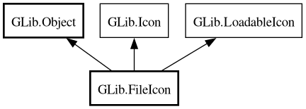

FileIcon
Object Hierarchy:

Description:
[
CCode ( type_id =
"g_file_icon_get_type ()" ) ]
public class FileIcon :
Object,
Icon,
LoadableIcon
Content:
Properties:
Creation methods:
Methods:
Inherited Members:
All known members inherited from class GLib.Object
All known members inherited from interface GLib.Icon
All known members inherited from interface GLib.LoadableIcon